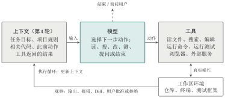
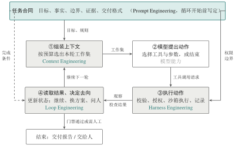
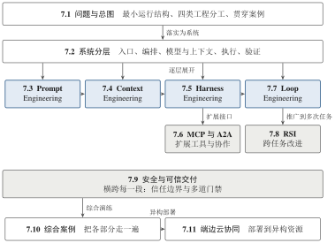

7.1 从代码生成到 Coding Agent
模型已经能写出看似正确的代码，为什么在真实仓库里仍然经常交付失败？本节先拆开一个具体需求，看看“写代码”之外还缺什么；再给出 Coding Agent 的最小运行结构——上下文、模型、工具和执行循环；然后把四类工程技术放到这个循环上，说明各自负责哪一段、谁调用谁；最后引入贯穿全章的“今日工作助手”案例，并约定什么叫“可靠完成”。结论是：可靠交付取决于模型能力和工程系统两方面，任何一方缺失，任务都无法稳定完成。
7.1.1 一次代码生成为什么不够
设想用户提出：“做一个今日工作助手，汇总会议、重要邮件和逾期待办，发现会议冲突，并生成一段简报。”把这句话直接交给代码生成模型，它可能很快写出一个页面。但页面能显示，不等于任务完成。至少还有这些问题没有答案：会议和邮件来自什么数据源？仓库里是否已有适配器？“逾期”按哪个时区计算？助手能否替用户发邮件或改日历？哪些测试能证明冲突判断是对的？
这些问题分属三类信息。数据结构、已有接口、运行命令属于项目事实；隐私、权限和业务规则属于约束；测试输出、构建结果和页面检查属于证据。模型不知道项目事实，就会编造接口；只收到模糊目标，就会自行扩大范围；没有运行检查，代码即使能编译，也可能在时区换算、边界条件或真实账号操作上出错。
更贴近实际的开发过程是：先读仓库，确认已有实现和运行命令；把需求分解成可检查的目标；修改少量相关文件并运行检查；检查失败就分析具体错误继续修正；全部通过后审查最终差异，报告证据。这是一个多步、有反馈的过程，而不是“输入一句话、输出一段代码”的单次映射。Coding Agent 可以自主选择其中许多具体动作，但它的自主性应始终处在明确的目标和执行边界之内。
7.1.2 Coding Agent 的最小运行结构
从实现上看，一个 Coding Agent 至少由四个要素组成（图 7-1）：
上下文：本轮送进模型的全部输入，包括任务目标、项目规则、相关代码、此前的动作和工具返回的结果；
模型：根据上下文选择下一步——读文件、搜索符号、编辑代码、运行测试、向用户提问，或者结束；
工具：把模型的选择变成真实操作，并返回可观察的结果，例如文件内容、命令退出码、测试报告；
执行循环：把工具结果写回上下文，让下一步判断能依据新证据改变。
记第 \(t\) 轮的上下文为 \(c_t\)，模型选择的动作为 \(a_t\)，工具执行后返回的观察为 \(o_t\)，则一轮循环是 \[c_t \xrightarrow{\ \text{模型}\ } a_t \xrightarrow{\ \text{工具}\ } o_t,\qquad c_{t+1} = \text{更新}(c_t,\, a_t,\, o_t), \tag{7-1}\] 直到模型选择“结束”或“询问用户”，或者外部规则要求停止。这里的“观察”不只是命令成没成功：失败断言给出的期望值与实际值、编译器指出的文件和行号、Git 差异、用户对某项写操作的批准或拒绝，都可能改变下一步。如果系统只是把同一条指令和同一段报错原样送回模型，循环虽然在转，问题却没有缩小。

图 7-1 Coding Agent 的最小运行结构。模型只负责选择动作（高亮），动作由工具在工作区中真正执行；执行结果作为观察写回上下文，构成下一轮决策的依据
这一结构与第 6.3.2 小节的通用智能体闭环一致。Coding Agent 的特殊之处在于工作对象：它操作的是版本化的代码仓库，动作会改变可执行代码，验证可以依靠测试、构建和静态检查，错误会跨文件传播，有些动作（部署、发消息、改生产数据）还有外部副作用。因此除了“模型会不会选对动作”，还必须关心：动作能否被允许、能否被复现、能否被撤销，以及何时可以宣布完成。
7.1.3 四类工程技术：各管循环的一段
把模型放进仓库以后，常见的失败并不都来自模型“不够聪明”：项目没写明正确的启动命令；测试依赖一个没配置的服务；终端能读到与任务无关的密钥；长任务中断后没有检查点；测试失败时 Agent 仍报告“已完成”。只要求模型“再仔细一些”，不能稳定消除这些问题。OpenAI 的一个内部团队在 2026 年 2 月公开的实践提供了佐证（以下数字均为该团队自己报告的）：约五个月里，起初 3 名、后来 7 名工程师驱动 Codex 生成了约 100 万行代码、合并约 1500 个 PR（Pull Request，合并请求），团队约定人类不手写代码；工程师的工作重心转到整理仓库知识、建立可执行的约束、提供工具和设计反馈回路上[1]。可以把这一观察粗略写成 \[\text{可靠交付} = \text{模型能力} \times \text{工程系统},\] 乘号表示二者缺一不可：工程系统再完善，模型推理不了也无济于事；模型再强，没有工具、约束和反馈，也落不到真实仓库上。
本章把“工程系统”拆成四类工程技术。拆分的依据是它们作用于运行循环的哪一段（图 7-2）：
Prompt Engineering（提示工程）作用于循环开始之前：把人的意图写成任务合同，写清目标、事实来源、边界、完成证据和交付格式。
Context Engineering（上下文工程）作用于每次模型调用之前：从任务合同、仓库、工具结果和记忆中挑出本轮需要的信息，组装成有限的工作集。
Harness Engineering（Harness 工程）作用于模型提出动作之后：Harness 是模型周围的运行系统，负责校验参数、检查权限、在隔离环境里执行、记录结果，并把观察返回。英文 harness 原指马具，这里取“让能力朝指定方向使出来”的意思。
Loop Engineering（循环工程）作用于观察返回之后：更新任务状态，判断继续、换方案、等待人工还是结束。Anthropic、OpenAI 等厂商的文档一般称这个过程为 Agent Loop（智能体循环），“Loop Engineering”是本书的归纳，强调循环的状态、反馈、停止和恢复都需要专门设计。

图 7-2 四类工程技术在 Agent 运行循环中的位置。Prompt 在循环开始前写定任务合同，其规则流向上下文，边界流向 Harness 的权限检查，完成条件流向 Loop 的退出判断（虚线）；Context、Harness、Loop 分别负责循环的①③④段；②是模型本身的能力
辨析
“Harness”有广义和狭义两种用法。广义上，它指模型之外的全部运行系统，包括上下文组装、循环控制、工具执行和权限，OpenAI 介绍 Codex 时就是这样用的[1]；这时四类工程中的后三类都可以算作 Harness 的一部分。本书取狭义：Harness 专指“动作提出之后”的执行与检查环节，把上下文和循环单独拿出来讨论，以便出问题时定位到更小的环节。读其他资料时要注意作者用的是哪一种。
四类工程不是四个互不相干的软件组件，它们之间有明确的调用关系。Context 在组装工作集时读取 Prompt 写下的合同和 Harness 返回的观察；Harness 执行的权限规则，一部分来自 Prompt 中的边界条款；Loop 在决定能否结束时，调用 Harness 提供的检查（测试、构建、门禁），并对照 Prompt 写下的完成条件。一次测试失败，既是 Loop 的反馈，也是 Context 的新证据；测试命令由 Harness 提供，“哪些测试必须通过”又来自 Prompt。区分四者的目的，是在出问题时找到该改进的环节（表 7-1）：Agent 改错了文件，多半是相关代码没进入上下文；它未经确认就发了邮件，首先是权限和工具边界的问题；它反复运行同一个失败的测试，则是循环的决策规则需要改进。
表 7-1 四类工程技术的分工
| 工程技术 | 作用于循环的哪一段 | 回答的问题 | 在“今日工作助手”中的体现 |
|---|---|---|---|
| Prompt | 循环开始前 | 要完成什么？什么算完成？ | 写明功能范围、只读边界、验收测试和交付形式 |
| Context | 每次模型调用前 | 这一步决策需要看到什么？ | 加载适配器接口、今日会议、最新测试失败；其余按需检索 |
| Harness | 模型提出动作后 | 能做什么？边界由谁强制？ | 独立工作区、Mock 服务、文件与终端工具、权限规则、Hook 与 CI（Continuous Integration，持续集成） |
| Loop | 观察返回后 | 结果怎样决定下一步和退出？ | 先跑相关测试；失败就定位原因；通过后跑完整检查并审查差异 |
图 7-3 给出了本章各节之间的关系。第 7.2 节先把循环落实为系统分层；四类工程分别在第 7.3、7.4、7.5、7.7 节展开；第 7.6 节的 MCP 与 A2A 扩展了 Harness 的工具接口和协作方式；第 7.8 节把单次任务内的循环推广到跨任务的改进；第 7.9 节的安全机制横跨循环的每一段。

图 7-3 本章知识地图。高亮的四节是四类工程技术，点线表示它们在运行循环中的先后顺序；7.6 节扩展 Harness 的工具接口，7.8 节把 Loop 推广到跨任务的改进，7.9 节的安全机制横跨循环的每一段
7.1.4 贯穿全章的案例：今日工作助手
为了让后面的概念始终对应同一个具体系统，本章使用“今日工作助手”作为贯穿案例。设定如下：一个 Next.js + TypeScript 项目已有日历（Calendar）、邮件（Mail）和待办（Tasks）三个 Mock Adapter——Mock 指用来替代真实服务的模拟对象，Adapter（适配器）负责把数据源转换成统一的接口。Mock Adapter 与将来接真实服务的 Adapter 接口相同，开发和测试时用前者，上线时可直接替换。Agent 的任务是实现一个只读工作台：按开始时间展示今日会议，选出三封高优先级邮件，标记逾期待办，识别时间重叠的会议，并生成一段 150～200 字的今日安排。发送邮件、创建或取消会议、删除任务等真实写入操作，需要另行获得用户确认。
这个案例足以暴露 Coding Agent 的典型难点：要读既有接口而不是臆造 API；要处理多来源数据和时间规则；要区分读权限与写权限；要用单元测试验证排序、逾期和冲突判断，再用构建和页面检查确认交付。
其中有一个小故障会反复出现：会议 09:00 开始，“开始前十分钟提醒”的测试期望 08:50，实际得到 16:50。两者正好相差八小时，这本身就是线索——合理的下一步是检查时间戳解析和时区转换，修改后先跑时间计算的单元测试。如果 Agent 立即重跑全部测试、顺手改页面样式，或者没有证据就宣布完成，它虽然一直在行动，却没有缩小问题。第 7.7 节将用这条轨迹分析循环的设计。
7.1.5 什么是“可靠完成”
Coding Agent 的产出应当由外部证据评价，而不是由模型自己的完成声明评价。“外部”指模型生成的文字之外、可以由人或程序独立检查的材料。对一个仓库任务，最基本的证据包括：需求中每项功能的对应实现，相关测试和构建的运行结果，最终的代码差异，以及未执行的操作和已知限制。涉及权限或外部服务时，还要有批准、拒绝和工具调用的记录。
可靠性也不能只用“测试通过率”概括，因为测试可能漏掉边界条件，或者与任务目标并不一致。本章从四个维度考察结果：
正确性：功能和约束是否满足；
安全性：有没有越权动作或敏感数据暴露；
可恢复性：中断和失败之后能否从检查点继续；
成本与时效：在给定的时间、算力和调用预算内能否完成。
这四个维度也是后面讨论多 Agent 协作（第 7.6 节）、自我改进（第 7.8 节）和边云协同（第 7.11 节）时共同的评价语言。
本节要点
Coding Agent = 上下文 + 模型 + 工具 + 执行循环；它的价值在于把目标、信息、行动和证据组织成一个能收敛的过程。
四类工程按“作用于循环的哪一段”划分：Prompt 在开始前，Context 在模型调用前，Harness 在动作提出后，Loop 在观察返回后。
“完成”由外部证据判定，评价维度是正确性、安全性、可恢复性、成本与时效。